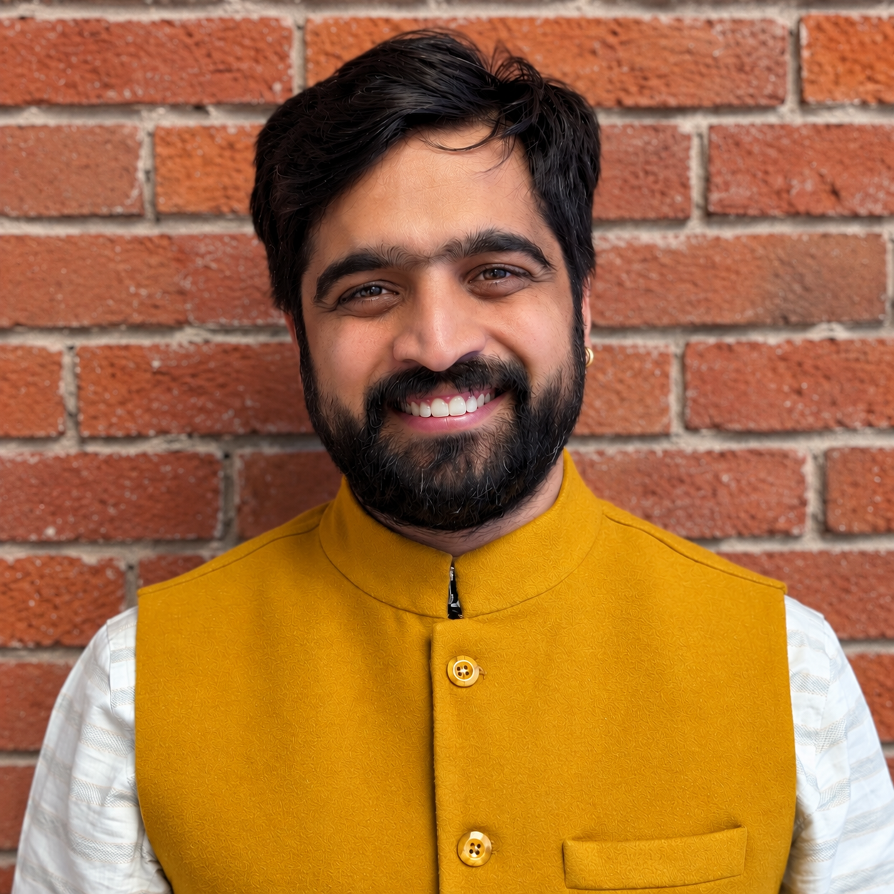

Problem
Marketplace conversations could contain contact sharing, abusive content, or other policy violations. Manual and reactive moderation could not provide a scalable, consistent operating path.
Software Engineer · 14+ years
I follow problems
across the system.
Technologies changed. Engineering principles didn't.
For 14+ years, I've connected product intent, architecture, implementation, cloud delivery, and production operations. Today that means building AI-enabled and distributed systems that teams can deploy, observe, and evolve with confidence.

Featured case study · Openlane
A production moderation capability delivered across the application, machine-learning, infrastructure, UI, and operational layers.
Problem
Marketplace conversations could contain contact sharing, abusive content, or other policy violations. Manual and reactive moderation could not provide a scalable, consistent operating path.
My ownership
Owned delivery across requirements, backend orchestration, dataset and model development, SageMaker deployment, dashboard integration, human-review tooling, production readiness, and stakeholder alignment.
System design
Prepared and evaluated labeled data for a multi-label DistilBERT classifier. Guardlane combines deterministic regex detection, the English classifier on SageMaker, and an LLM fallback for non-English or unsupported input behind one moderation API.
Production outcome
Deployed a traceable moderation capability with explicit failure handling, telemetry, asynchronously persisted outcomes, and rollback support. A dashboard enables human review and operational feedback; evaluation and reviewed outcomes guide threshold changes and future model refinement.
Engineering lesson
A model endpoint is not a production AI system. Reliability comes from the surrounding contracts, routing, versioning, telemetry, review workflow, and clear ownership of business decisions.
Request path
Marketplace input → language and pattern detection → DistilBERT or LLM route → normalized moderation evidence → product decision → review and feedback
Other selected work
Each project is reduced to the decision, ownership, outcome, and lesson that best show its technical scope.
01 / Openlane
Evolving a live automotive marketplace across legacy, serverless, and modern service generations.
02 / Openlane
An LLM-assisted workflow for processing dealer-provided vehicle content.
03 / Holland & Barrett
Commerce search where relevance, promotions, product data, and runtime behavior meet.
Engineering capabilities
The principles show up in the work: evidence before optimization, reliability before cleverness, production readiness before demo readiness, and clear communication before risky handoffs.
01 / Production AI systems
Evidence: Guardlane dataset, evaluation, hybrid inference, SageMaker deployment, monitoring, and human review; AI Upload workflow integration.
Python · DistilBERT · SageMaker · LLMs · MLOps · Honeycomb
02 / Distributed systems & modernization
Evidence: Routed Oracle-originated domain events into cloud services; evolved marketplace capabilities across legacy, serverless, and .NET platforms.
Java · .NET · Node.js · Kinesis · Pulsar · Lambda
03 / Product & service architecture
Evidence: Vehicle Detail BFF aggregation, marketplace micro frontends, search APIs, and AI-assisted dealer workflows.
REST · GraphQL · React · Svelte · Stencil · TypeScript
04 / Cloud delivery & production engineering
Evidence: Versioned model deployment and rollback support, platform upgrades, production investigation, and distributed tracing.
AWS · Docker · Kubernetes · ArgoCD · CDK · OpenTelemetry
05 / Search & data systems
Evidence: Enterprise search APIs, query construction, promotion rules, production diagnosis, and transactional and event-driven data paths.
Elasticsearch · Oracle · PostgreSQL · DynamoDB · ANTLR4
06 / Technical leadership
Evidence: Turned ambiguity into delivery paths, aligned product and engineering, surfaced missed requirements and integration risks, kept decisions moving during limited leadership coverage, and supported engineers through planning, reviews, and investigations.
Architecture · planning · reviews · mentoring · incident support
Career journey
A progression of responsibilities and problem spaces, not a disconnected list of titles.
Foundation
Built desktop, mobile, web, and enterprise applications with Java, C#, .NET, Android, PHP, and SQL—learning which engineering concepts survive framework changes.
Commerce
Implemented enterprise search, promotion logic, APIs, React features, and production fixes at Holland & Barrett.
Products
Healthcare and FoodMesh product work deepened my focus on correctness, usability, maintainability, and customer operations.
Platform
Integrated legacy event paths with cloud-native services, built BFF and frontend capabilities, and maintained production continuity at Openlane.
Today
Delivering AI-enabled capabilities across models, services, infrastructure, operations, architecture, and stakeholder alignment—with responsibility extending beyond implementation.
Recommendations
Perspectives from engineering, product, leadership, clients, and operations. The strongest evidence of system thinking and ownership appears first.
11 professional recommendations
“He understands the big picture as well as specific technical details and makes suggestions that implement complex features in the right way—well designed and easy to maintain.”
“Dheeraj had a get-it-done attitude; no problem was too big. He addressed challenging issues, communicated clearly with the team and stakeholders, and was a joy to work with.”
“Dheeraj was reliable and routinely went above and beyond… with in-depth knowledge of our problems and solutions, commitment to getting things done, and customer empathy.”
“An exceptional full-stack developer: highly skilled, dedicated, detail-oriented, and committed to maintainable, scalable applications.”
“Skilled and dependable, able to interpret and implement brief stories with minimal guidance. He often makes suggestions that improve the final outcome.”
“An excellent polyglot who willingly gets the work done and contributes to team goals; his quality and desire to learn have not gone unnoticed.”
“From day one, he was able to immerse himself into the team and roll up his sleeves to get to work. His work met or exceeded expectations.”
“He managed development of a complex meal-plan product in a language foreign to his own, doing everything in his power to solve each challenge with efficiency and a strong attitude.”
“Experienced and very knowledgeable. With minimal guidance he is able to understand our systems, fix bugs promptly, and implement new feature changes.”
“I have enjoyed working with Dheeraj because of his positivity and willingness to jump in and help on projects, and his initiative in finding creative solutions.”
“Efficient and hard working, known for out-of-the-box thinking, strong database knowledge, problem solving, and adapting quickly to change.”